地政学
テヘランはイラン国家の意思決定が集まる首都で、湾岸、コーカサス、中央アジア、中東の緊張が政策と暮らしに戻ります。制裁、外交、治安、選挙、抗議の影響は、物価、移動、教育、メディアにも現れる政治都市です。

🇮🇷 イラン / 西アジア / World City Atlas
アルボルズ山脈の麓に広がるイランの首都です。国家の意思決定、制裁下の商業、大学と映画、宗教生活、住宅格差、大気汚染、山麓の余暇が一つの都市圏に重なります。
都市の骨格
テヘランは、宮殿と革命、官庁と大学、バザールと高速道路、高層住宅と山麓の散策路が同時に見える都市です。イランの政治、経済、文化、社会問題が最も濃く集まります。
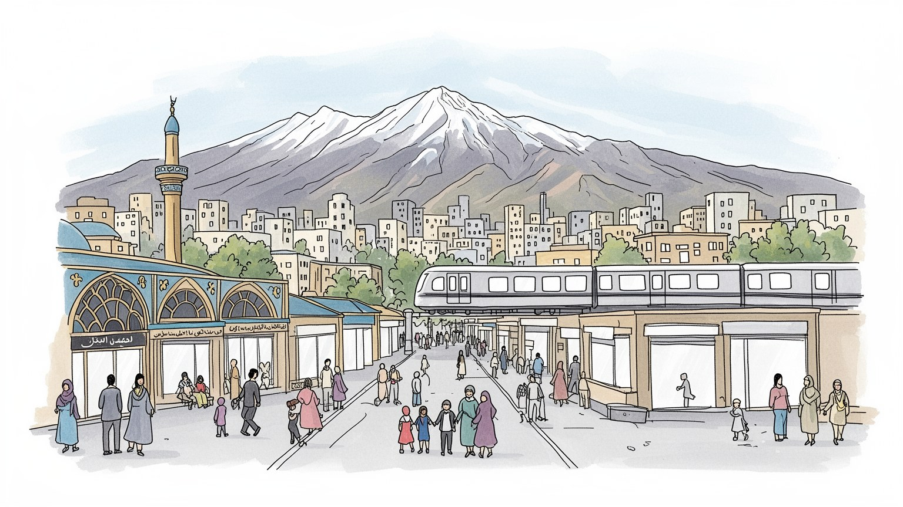
テヘランはイラン国家の意思決定が集まる首都で、湾岸、コーカサス、中央アジア、中東の緊張が政策と暮らしに戻ります。制裁、外交、治安、選挙、抗議の影響は、物価、移動、教育、メディアにも現れる政治都市です。
政府、金融、石油管理、自動車、建設、大学、医療、映画、情報通信、小売が雇用を支えます。公的部門と非公式労働が並び、若者、女性、移住者は物価、通勤、規範、住宅費の間で働き方を探り、副業も選び取ります。
モスク、大学、映画館、書店、家庭の食卓、追悼行事、サッカー、若者文化が重なります。敬虔さと都市的な自由への願いは日常の調整として現れ、文学や映像、音楽、夜のカフェが社会の言葉を育て、沈黙も映します。
観光客は宮殿、博物館、バザール、山麓公園を訪れますが、住民には家賃、渋滞、大気汚染、水、物価、教育が切実です。地下鉄通勤、夜の買い物、週末の山歩き、家族の外食に首都の日常が見え、世代差も表れます。
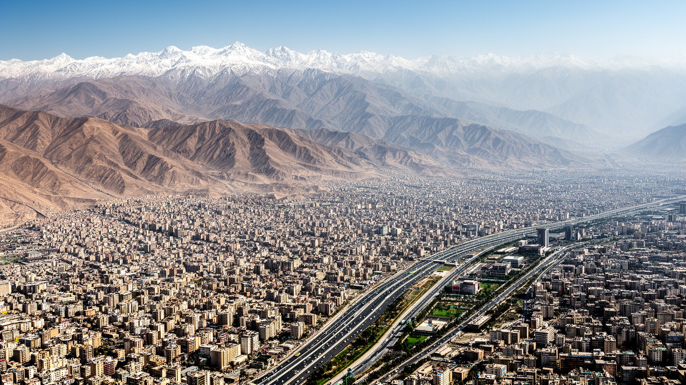
テヘランはアルボルズ山脈の南麓に広がり、北へ行くほど標高が上がり、南へ下るほど平坦で乾いた市街地になります。この地形は眺望だけでなく、気温、空気、水、住宅価格、交通、階層の分布を決めてきました。北部の斜面には涼しさと緑、富裕層の住宅、山へ向かう余暇が集まり、南部には工場、物流、古い住宅地、低所得層の生活圏が広がります。冬は冷たい空気が盆地状の街に滞留し、排ガスや粉じんが抜けにくいです。水路や谷筋は都市の生命線でしたが、舗装、地下水利用、人口増加が環境負荷を強めました。さらに山麓の開発は、土砂災害、緑地保全、眺望の私有化という問題を連れてきます。週末に北の谷へ歩く家族と、南の職場から長距離バスで帰る労働者は同じ都市を共有しながら、地形をまったく違う重さで経験しています。学校、病院、公園への近さも、坂の上と下で意味が変わります。都市計画では、斜面の建設をどこまで認めるか、古い水路をどう守るか、南部にも緑と涼しさを配れるかが問われます。自然に近い首都であるほど、自然を消費し尽くさない管理が必要になります。雪解け水の少ない年には、山の恵みが限られた資源であることもはっきり見えます。テヘランの地理を読むことは、どの坂に住み、どの空気を吸い、どの駅へ向かうかを見ることです。山は誇りであり、格差と環境管理の責任を映す背景でもあります。
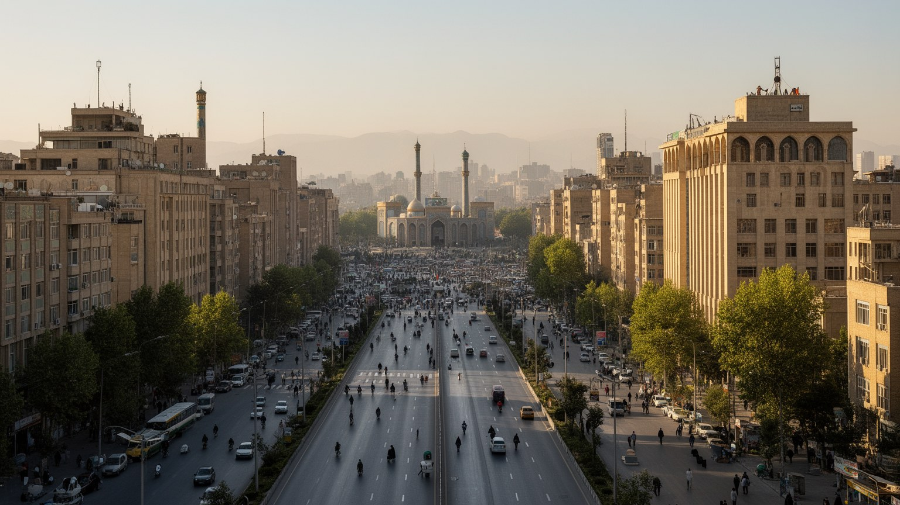
テヘランはイランの首都として、政府機関、議会、大使館、軍や治安組織、国営企業、中央銀行、主要大学、全国メディアを抱えます。ここで決まる政策は、石油収入の配分、補助金、通貨、教育、外交、宗教規範、インターネット、都市管理に及び、遠い地方の生活にも影響します。首都機能は権威ある建物だけでなく、道路規制、警備、式典、抗議行動への対応、情報の統制として市民の日常に現れます。選挙や外交危機、制裁強化、地域紛争の緊張は、為替、食料価格、雇用、留学、旅行、家族の不安へ戻ってきます。一方で首都には政策に近い仕事、教育機会、専門職、文化的な選択肢も集中します。地方都市から来た学生や官僚候補にとって、テヘランは出世への入口です。同時に、首都で発せられる決定が地方の不満を集める場所でもあり、街は国家の神経のように反応します。官庁街の昼食、報道機関の動き、大学前の警備、記念日の交通規制は、制度が街路へ降りてくる瞬間です。公共空間の使い方には、国家の自信と市民の慎重さが同時に表れます。地方からの請願、企業の陳情、学生の進路も首都へ吸い寄せられ、都市は期待と不満を同時に受け止めます。大学での議論、家庭内の慎重な会話、公共広場の使われ方が首都の政治性を細かく示します。権力の中心に暮らすことは、機会と監視の両方に近いことを意味します。
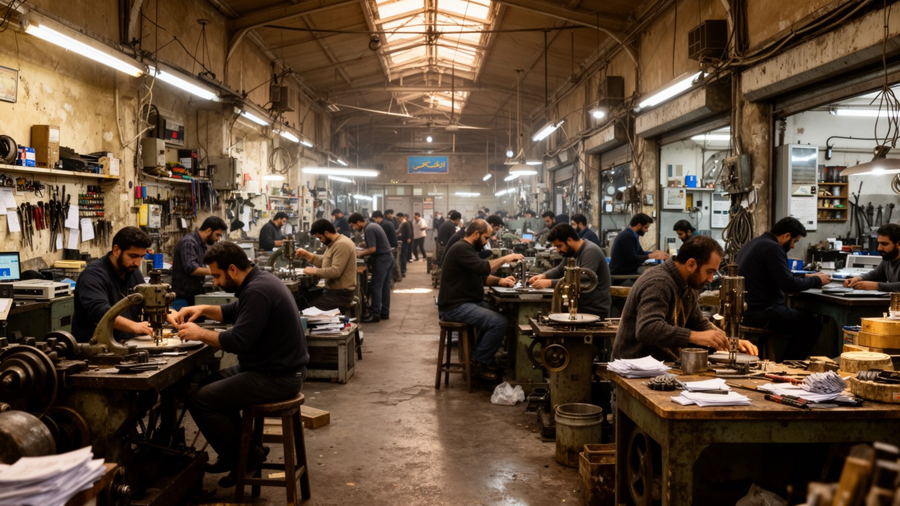
テヘランの経済は、石油国家の管理中枢、政府支出、金融、建設、自動車、医療、大学、情報通信、映画、出版、小売、バザール、非公式なサービス業が絡み合います。都市圏は国内最大の雇用市場で、地方から来た若者、専門職、商人、工場労働者、配達員、女性の働き手が集まります。しかし国際制裁、通貨安、輸入制限、インフレは、企業の投資、部品調達、薬品、家電、家計を揺らし、賃金の伸びを物価が追い越すことも多いです。公的部門に近い仕事は安定をもたらしますが、露店、運転、修理、配達、短期契約で暮らす人々は景気変動に弱いです。バザールは為替や輸入の変化を素早く価格に反映し、信用取引と人脈が不安を補います。会社員でも副業を持ち、家族が複数の収入を合わせて家計を守ることがあります。女性は学歴を生かした職を求めながら、職場の規範や家庭の期待とも向き合います。若者の起業や技術職は、国内市場の制約と国際接続の難しさに常に影響されます。修理、再利用、代替部品、国内調達の工夫は、制裁下の都市経済を支える実務知でもあります。雇用の不安は結婚、出産、住宅購入、親の介護の判断にも直結し、経済は家族の時間割を変えます。高学歴の若者が専門職を求めても、不確実性から副業や移住を考えます。首都の豊かさの裏で、家族の財布は住宅費、教育費、医療費を抱え続けます。買い物袋の軽さにも経済が見えます。
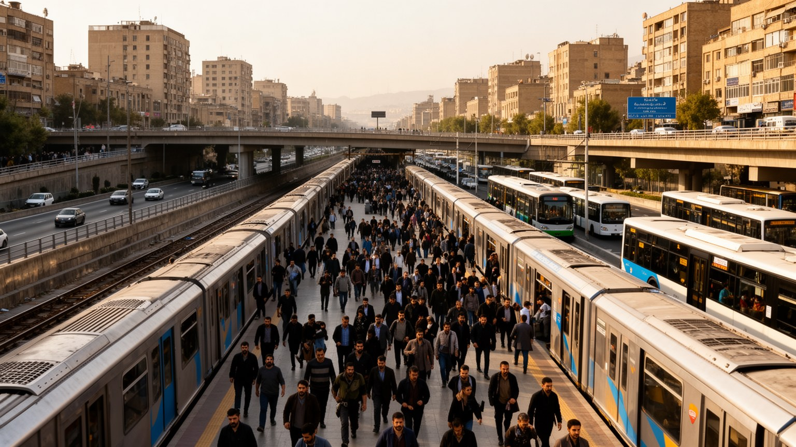
テヘランの交通は、首都の規模と矛盾を最も見えやすくします。地下鉄は市民の移動を支える骨格で、バス高速輸送、路線バス、タクシー、乗合タクシー、自家用車、オートバイが巨大な移動量を処理しています。それでも職場、大学、官庁、病院、商業施設が広い都市圏に散らばるため、朝夕の渋滞は深刻で、移動は時間と体力を奪います。地下鉄の拡張は重要ですが、駅へのアクセス、女性の安全、混雑、運賃、郊外との接続が課題として残ります。高速道路の整備は便利さを生む一方、さらに車利用を増やし、街を歩きにくくする場合もあります。長い通勤は家族の食事、睡眠、学習、介護の時間を削り、低所得層ほど移動の負担を逃れにくいです。駅までの歩道、日陰、横断のしやすさ、夜の明るさは、地図に出にくいが毎日の安全を左右します。女性専用車両や混雑管理も、単なる運行効率ではなく尊厳の問題です。都市の外縁へ住宅が伸びるほど、駅から先のバスや乗合タクシーが暮らしを支えます。交通費の値上げや燃料価格は、通勤だけでなく買い物、通院、親族訪問の回数まで変えます。移動の質は都市の公平性を測る指標で、速さだけでなく待てる場所、座れる機会、乗り換えの安心も含まれます。誰が長く待ち、誰が安全に帰宅できるかを見ると、交通は技術だけでなく公平性の問題になります。駅前の歩道、夜間の乗り継ぎ、障害者の移動も生活の尊厳に関わります。
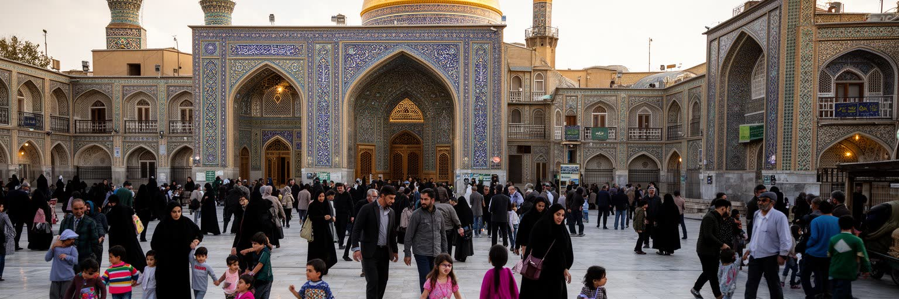
テヘランの宗教生活は、モスク、追悼行事、ラマダン、アーシューラー、墓地、家庭の祈り、慈善、説教、学校教育を通じて都市に根を張ります。ベヘシュテ・ザフラー墓地や殉教者の記憶は、革命後国家と家族の喪失を結びつけ、宗教的な時間を公共空間に刻みます。一方で首都には多様な価値観も集まります。敬虔な家庭、世俗的な若者、少数派、地方出身者、芸術家、学生、専門職は、服装、交友、音楽、映画、インターネット、公共空間の使い方をめぐって日々調整を行います。宗教規範は安心や共同体を与えることもあれば、女性や若者にとって制約として感じられることもあります。モスクの隣にカフェがあり、追悼の旗の下を大学生が通り、家庭の食卓で政治と信仰が静かに語られます。都市が大きいほど信仰の表し方は一様でなくなり、隣人の目と匿名性が混ざる首都では、人々が自分の距離感を慎重に選びます。祝日の買い物、断食月の食事時間、墓参り、困った人への寄付、服装選びは、制度より細かな生活の作法として働きます。信仰は壮大な儀礼だけでなく、近所づきあいと家族関係を調整する日々の言葉でもあります。公共の規範が強いほど、家庭や友人関係の中で交わされる小さな合意が重みを持ちます。信仰と自由を単純に分けず、家族への敬意、社会の目、個人の希望、国家の規則を同時に扱う姿に首都の公共生活が表れる街です。
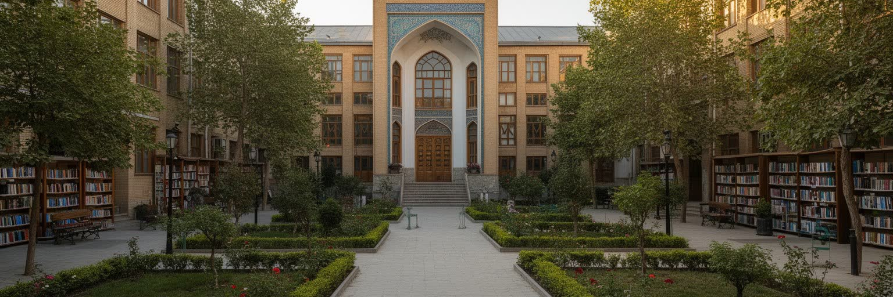
テヘランはイランの教育と文化産業の中心でもあります。テヘラン大学、シャリーフ工科大学、芸術系の学校、研究機関、出版社、書店、映画、劇場、ギャラリー、音楽の場が、首都の知的な厚みを作ります。学生は地方から集まり、寮、地下鉄、カフェ、図書館、家庭教師、アルバイトを通じて都市を使いこなします。大学は専門知識を育てるだけでなく、政治的な議論、社会運動、ジェンダーや雇用をめぐる不満が表れる場にもなってきました。イラン映画は、家庭、子ども、女性、都市の沈黙、階層差を繊細に描き、制約の中でも世界的な評価を得てきました。出版や翻訳も重要で、詩、哲学、社会科学、宗教書、学習参考書、児童書が読者を作ります。文化産業は華やかに見えますが、検閲、紙の価格、製作費、上映機会、若者の国外志向に左右されます。小さな書店、低予算映画の撮影班、女性監督、ネットで作品を共有する若者は、公式の言葉とは別の社会観察を育てます。カフェでの読書会、大学周辺のコピー店、家庭教師市場、語学学校も、上昇志向と移住願望を映す文化装置です。学ぶことは職を得る手段であり、閉塞感を言葉へ変える技術でもあります。展覧会や上映会、地下の音楽練習、サッカー談義は、都市の息苦しさを共有し直す余白にもなります。知と表現は、首都の日常を批判し、支え、外へ伝える力になっています。
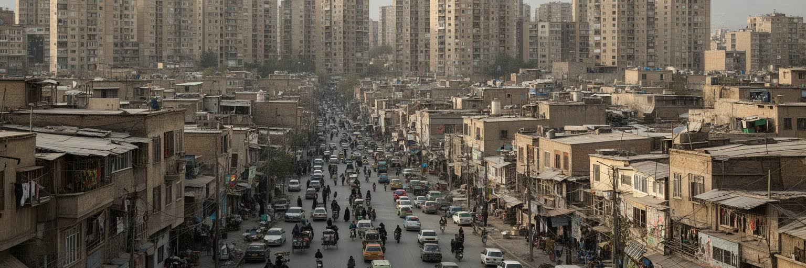
テヘランの日常を強く形づくる条件の一つは住宅です。北部の山麓には高価な集合住宅、庭のある住宅、洗練された商業施設が集まり、南部や周辺都市には密度の高い住宅、工場、物流施設、低所得層の生活圏が広がります。中心部の古い地区では再開発と老朽化が同時に進み、家賃上昇は若い夫婦、学生、移住者、高齢者に重くのしかかります。職場や大学が首都に集中するため、郊外から長距離通勤する人も多いです。住宅の場所は、どの学校に通えるか、どの病院を使えるか、どの公園で休めるか、どれだけ汚れた空気を吸うかを決めます。結婚を遅らせる若者、親世代と同居する家族、郊外へ移る世帯の判断にも住宅費が影を落とします。再開発で防災性や設備が改善される一方、古い店や長く住んだ人が押し出されることもあります。北部の住所は社会的な信用や結婚市場で意味を持ち、南部の生活圏は安い家賃と長い移動を引き換えにすることが多いです。住宅政策は、単に戸数を増やすだけでなく、交通、学校、医療、緑地を同時に整える必要があります。家族の支援なしに独立する難しさは、若者の進路や結婚観にも影響します。格差は所得差だけでなく、坂の上と下、駅への近さ、通勤時間、断熱、エレベーター、水圧、日陰の有無として経験されます。子どもの通学、高齢者の買い物、夜の帰宅も住まいの条件で変わります。
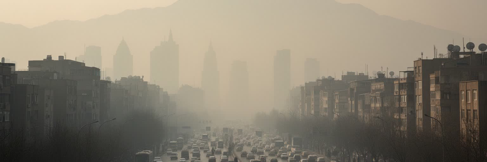
テヘランの大気汚染は、都市の成長と地形が重なって生まれます。自動車依存、古い車両、燃料、工場、建設、乾いた粉じんに加え、冬の逆転層が汚れた空気を街に閉じ込めます。山が近いことは景観の魅力である一方、空気の逃げ道を狭め、学校閉鎖や健康被害につながる日もあります。空気の悪さは平等に見えて、実際には屋外で働く人、長距離通勤者、子ども、高齢者、低所得地区の住民に重くのしかかります。地下鉄やバスの拡充、車両更新、燃料改善、緑地の配置、工場管理は必要ですが、住宅と職場の距離を短くしなければ負荷は残ります。医療機関は呼吸器疾患の増加に向き合い、学校や家庭は外遊びや通学の判断を迫られます。空気の悪い日には山麓の眺望が失われ、都市の象徴的な風景そのものが生活リスクに変わります。低所得層ほど空気清浄機や郊外の休暇で逃れる選択肢が少ない状況です。環境対策は排ガス規制だけでなく、職住近接、歩きやすい街路、都市緑化、建設現場の粉じん管理を含みます。空気の質を改善することは、医療費を抑え、子どもの学習機会を守り、山麓景観を取り戻す政策でもあります。大気は見えにくいですが、都市の不平等を毎日吸い込ませます。空気は都市政策の結果であり、個人のマスクや我慢だけでは解決しません。朝の山並みが霞む日は、首都の便利さが誰の健康を削っているのかを問い直す合図になります。
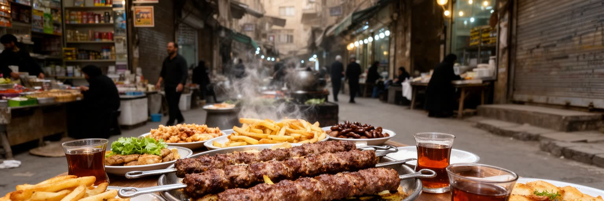
テヘランのグランド・バザールは、観光客が歩く歴史的な通路であると同時に、衣料、金、絨毯、家庭用品、食品、卸売、倉庫、金融、信用、人脈が重なる商業機構です。王朝期から政治と商業に関わってきたバザール商人は、宗教施設、慈善、家族経営、地方の取引先と結びつき、近代的なショッピングモールとは違う経済の回路を維持しています。狭い路地の店頭は古く見えても、携帯電話、為替情報、配送網、郊外倉庫、オンライン販売が組み込まれます。周辺の食堂や茶屋では、ケバブ、煮込み、米料理、甘い茶が商談と休息を支えます。朝の荷ほどき、昼の祈り、夕方の値段交渉は、商業と生活の時間を細かく刻みます。食材の値上がりは家庭の献立を変え、外食の小さな贅沢も物価に左右されます。市場の奥には地方と首都を結ぶ物流の知恵があり、商いは都市文化と信仰の近くで息づきます。観光客が買う土産の背後には、職人、荷運び、食堂、清掃、倉庫、配送の仕事があります。古い天井や迷路のような通路は遺産であると同時に、防災、混雑、継承の課題を抱える労働空間でもあります。家庭の食卓は、こうした商業の変化を毎日の味として受け止めます。香辛料、革、金属の匂い、値段を確かめる声も市場の記憶です。市場を歩くことは、制裁下の首都で商品と現金と信頼がどう流れるかを見ることです。
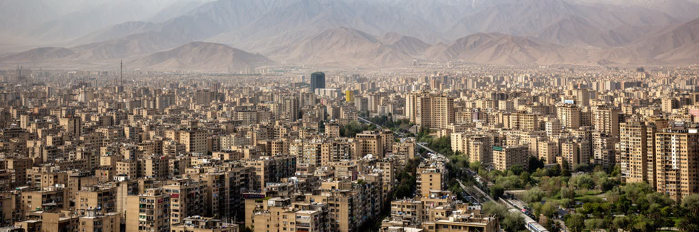
テヘランを世界都市として読む時、金融規模や人口だけでは十分ではありません。ここには、イラン国家の意思決定、石油経済の管理、制裁下の市場、大学と映画、宗教規範、王朝と革命の記憶、山麓の住宅格差、大気汚染、水不足、若者の将来不安が集中しています。湾岸や中東の緊張は外交文書だけでなく、為替、輸入品、就職、旅行、家庭の会話として首都の日常に戻ります。北の山麓で涼しさを楽しむ人と、南の長い通勤に疲れる人は、同じ都市に住みながら違うテヘランを経験します。バザールの信用、地下鉄の混雑、大学の議論、映画の沈黙、墓地の記憶、週末の山歩きは、多層性を示す手がかりです。政治ニュースの舞台としてだけ見れば、住民の生活力や文化的な創造性を見落とします。逆に文化の豊かさだけを見れば、監視、物価、環境、格差、移動の重さを見失います。テヘランは権力が集まる場所であると同時に、その影響を最も濃く受けながら人々が調整を続ける都市です。都市の重要性は、巨大な建物や国際会議だけでなく、政策が台所、教室、駅、病院、映画館へどう届くかで測られます。山麓の景観と市場の値札を同時に読むことが、この首都を理解する近道になります。国家の中心と生活都市を分けずに読む時、テヘランの重要性は、決定がどれほど多くの生活へ波及するかで見えてきます。夕方の山風、地下鉄の音、茶の香りも首都の一部です。